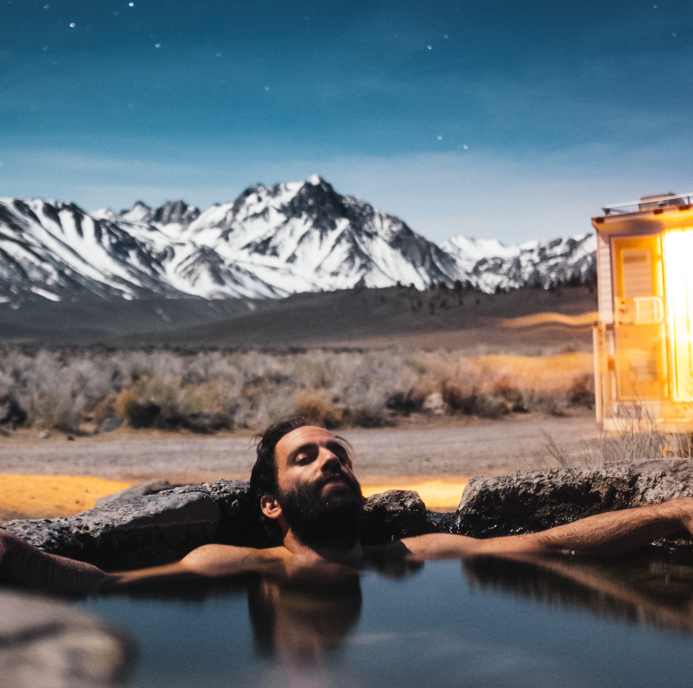

Mustaches: Not Just for Movember Anymore
Since its heyday in the later 1960s and ’70s, the mustache has waned in favor of the beard. But a new generation of men like Midland’s Mark Wystrach is changing that—and not just as a novelty move.
Read Now
